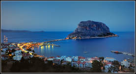

Welcome to monumental, historic and beautiful Laconia! Well known from ancient times, Laconia, whose capital is Sparta, has many archaeological interests, beautiful beaches, rich vegetation, rare natural beauty and is famous for the hospitality of the residents. All these features create a friendly and attractive tourist destination for Greek and foreign visitors alike.
Although Laconia is globally known
from prehistoric, ancient, byzantine and modern time, now I have
taken the opportunity to introduce a specific part of Laconia, a
particular piece of land, which
is offered for tourist development.
The plot is
situated at the base of the magnetic triangle of Mistras -
Sparta, the metropolis of Byzantium, Monemvasia, the Gibraltar of
Greece, Neapolis and Elafonissos, on one side and the expansive
area of Mani, with the most hauntingly beautiful caves in the
world, the caves of Diros, on the other side.
The
proposed for tourist development land is 18000 m2, located 350
meters from the beach Makris Yalos (Long Beach), an area noted for its
clear, unpolluted sea. Makris Yalos is 2 kilometers away
from Elia, a port and local touristic resort and about 90
kilometers from Kalamata, which is connected to Athens by air
and to Piraeus port by Hydrofoil.
The site has a main
road frontage of 170 meters thus easily accessible from the
nearby towns of Kyparissia, Sparta and Gythion. The site has
got also water, electricity and telephone. In other words, it has all the
necessary elements an infrastructure requires.
|
It is worthwhile mentioning that architectural plans for a hotel and bungalows complex, approved by Greek National Tourist Organization, are also available. If more land is needed, additional land is available either adjacent to the existing one or another piece of land by the sea. The land and the architectural plans (optionally) are offered on lease or sale. |
For further information you may contact us by email or phone call.